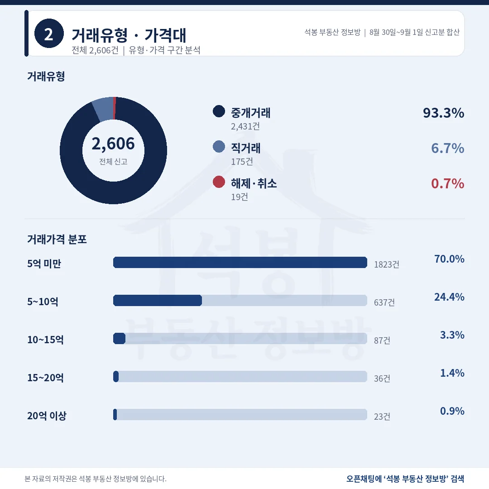
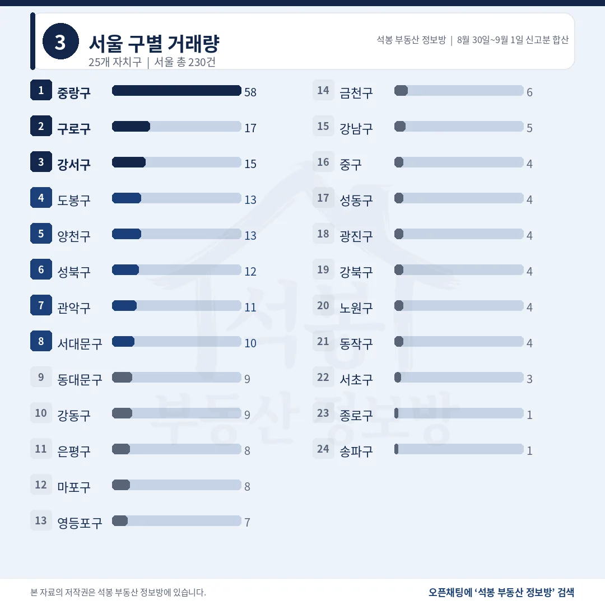
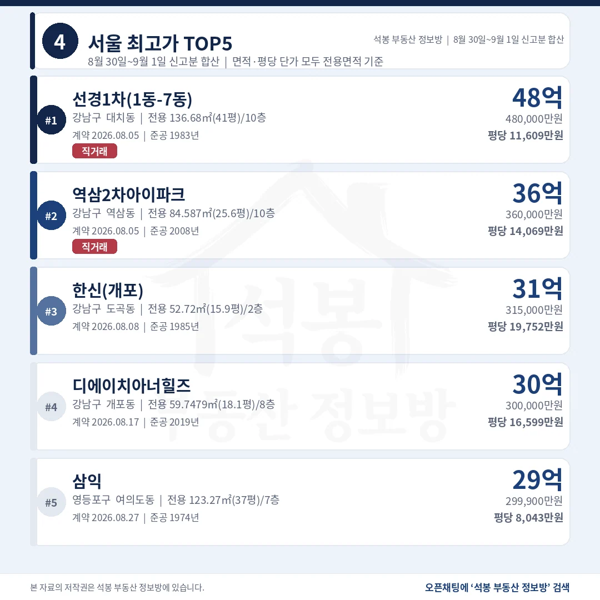
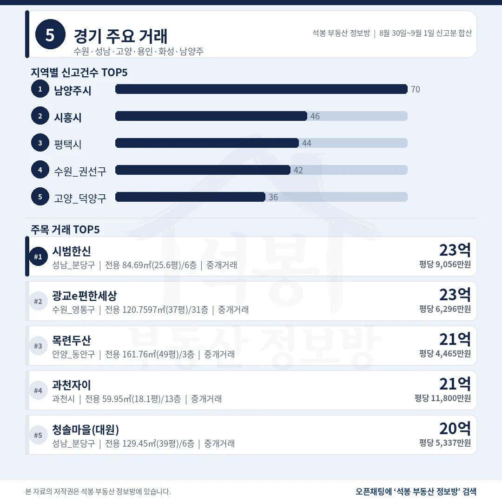
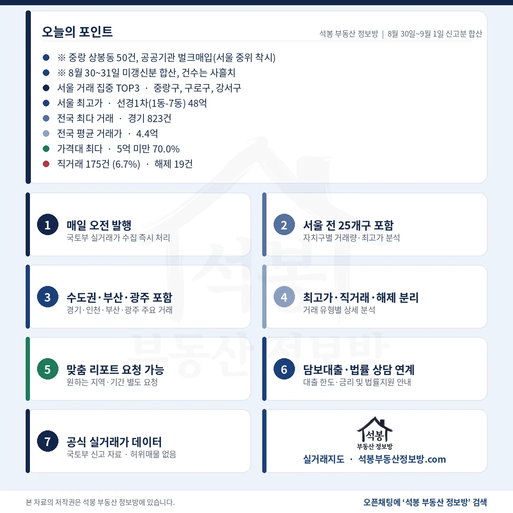

9월 1일 자료에 담긴 아파트 실거래 신고는 2,606건입니다. 다만 8월 30일과 31일에 원본이 갱신되지 않아 8월 30일부터 9월 1일까지 사흘 신고분이 한꺼번에 들어온 숫자입니다. 그래서 건수를 전날과 견주는 대신 비중과 중위값, 최고가 위주로 읽으셔야 합니다. 사흘을 합쳤는데도 10억을 넘긴 거래는 146건뿐이었습니다.
단지명을 누르면 그 단지의 실거래 내역과 시세를 바로 볼 수 있습니다. (면적과 평당 단가는 모두 전용면적 기준)
5억 미만 1,823건 70.0%, 10억 위는 146건

거래유형·가격대
사흘을 합쳐도 상단이 두꺼워지지 않았습니다.
거래유형
건수
비중
중개거래
2,431건
93.3%
직거래
175건
6.7%
해제·취소
19건
0.7%
직거래 175건 가운데 50건이 서울 중랑구 상봉동 한 단지에서 같은 날 나왔습니다. 그 50건을 빼면 125건입니다.
가격대
건수
비중
5억 미만
1,823건
70.0%
5~10억
637건
24.4%
10~15억
87건
3.3%
15~20억
36건
1.4%
20억 이상
23건
0.9%
5억 미만 70.0%는 8월 25일 이후 엿새 가운데 가장 높습니다. 지방 물량이 사흘치로 쌓인 영향이 큽니다.
여기서부터는 회원에게 보여드립니다
카카오 로그인 3초면 전문을 읽을 수 있습니다. 무료입니다.
가입하시면 지역 시장조사 보고서(약식)를 2회 무료로 요청하실 수 있습니다.
이미 회원이면 같은 버튼으로 로그인만 됩니다
경기 823건, 서울 230건 중 50건이 한 단지

서울 구별 거래량
수도권 1,228건으로 47.1%, 절반이 지방에서 나왔습니다.
시도
신고
시도
신고
경기
823건
충남
129건
서울
230건
대구
120건
부산
186건
충북
112건
경남
181건
광주
109건
인천
175건
경북
106건
경기 823건은 남양주 70건, 시흥 46건, 평택 44건, 수원 권선구 42건 순이었습니다. 특정 단지가 몰린 곳은 없습니다.
서울 자치구
신고
비고
중랑구
58건
상봉생활 공공기관 매입 50건 제외 시 8건
구로구
17건
중위 6.35억 · 쏠림 없음
강서구
15건
중위 8.10억
도봉·양천
각 13건
도봉 6.55억 · 양천 11.50억
서울 24개 구 전체
230건
중위 6.90억 상봉생활 제외 시 8.44억
중랑구 50건은 전부 매도자 법인, 매수자 공공기관인 직거래이고 계약일도 8월 27일 하루로 같습니다. 2026년 준공 신축의 전용 20.2㎡(6.1평) 소형이 2.87억에서 3.08억 사이에 일괄 손바뀜했습니다.
48억 선경1차, 상위 넷이 모두 강남구

서울 최고가 TOP5
총액 1위와 평당 1위가 열여덟 살 차이의 다른 단지입니다.
단지
위치
거래가
전용면적
평당(전용)
1 선경1차 (1동-7동)
강남 대치동
48.0억
136.7㎡ (41평)
11,609만 1983년
2 역삼2차 아이파크
강남 역삼동
36.0억
84.6㎡ (25.6평)
14,069만 2008년
3 한신 (개포)
강남 도곡동
31.5억
52.7㎡ (15.9평)
19,752만 1985년
4 디에이치 아너힐즈
강남 개포동
30.0억
59.7㎡ (18.1평)
16,599만 2019년
5 삼익
영등포 여의도동
29.99억
123.3㎡ (37평)
8,043만 1974년
평당으로 줄 세우면 순서가 뒤집힙니다. 1985년 준공 한신(개포)의 전용 52.7㎡(15.9평)가 평당 19,752만원으로 가장 비쌌고, 총액 1위 선경1차는 평당 11,609만원으로 다섯 중 넷째였습니다. 5위 삼익은 여의도 재건축 구역 안에 있는 1974년 준공 단지입니다.
인천 송도 18.8억이 부산 최고 14.8억보다 위

경기/인천/부산/광주
건수는 부산이 인천보다 많은데, 상단은 인천이 4.0억 높습니다.
지역
신고
최고가 단지
거래가
평당(전용)
경기
823건
성남 분당 서현동 시범한신
23.2억
9,056만
인천
175건
연수 송도동 힐스테이트송도더스카이
18.8억
5,167만
대구
120건
수성 범어동 힐스테이트범어
17.4억
6,773만
광주
109건
남구 봉선동 한국아델리움1단지
15.5억
3,952만
부산
186건
수영 민락동 롯데캐슬자이언트
14.8억
2,877만
평당으로 보면 순서가 또 달라집니다. 대구 힐스테이트범어는 전용 84.9㎡(25.7평)에 17.4억이라 평당 6,773만원인데, 부산 롯데캐슬자이언트는 전용 170.0㎡(51평)에 14.8억이라 평당 2,877만원입니다. 경기 1위 시범한신은 1991년 준공 분당 1기 신도시 단지로, 이날 전용 84.7㎡(25.6평)가 23.2억에 거래됐습니다.
20억 넘은 23건 중 6건이 경기, 과천·분당에서 넷

구간
서울
경기
그 밖
20억 이상 23건
17건
6건
없음
15억 이상 59건
41건
14건
인천·대구·광주·대전 각 1건
경기 6건은 과천 2건, 분당 2건, 수원 영통구와 안양 동안구 각 1건입니다. 서울 17건은 강남구 5건, 양천구 3건, 성동·마포·강동 각 2건으로 갈렸습니다.
사흘을 합친 자료인데도 20억 위가 23건에 그쳤습니다. 그중 6건이 경기에서 나왔고 넷은 과천과 분당에 있습니다. 15억 구간까지 넓히면 59건 가운데 서울이 41건, 경기가 14건이라 고가 거래는 여전히 서울과 경기 남부 일부에 묶여 있습니다. 지방에서는 인천 송도, 대구 범어동, 광주 봉선동이 각각 한 건씩 15억을 넘겼을 뿐입니다.
이날 가장 조심해서 읽어야 할 숫자는 서울 중위 6.90억입니다. 서울 230건 가운데 50건이 중랑구 상봉동 한 단지에서 나온 공공기관 매입인데, 전용 20.2㎡(6.1평) 소형이 3억 안팎에 일괄 계약되면서 서울 전체 중위값을 끌어내렸습니다. 그 50건을 빼면 중위는 8.44억이 됩니다. 서울 표본의 22%를 한 계약이 차지한 날이라, 자치구 순위도 시세 신호로 읽기 어렵습니다.
표 보는 법 · 직거래는 중개사를 끼지 않고 당사자끼리 한 거래입니다. 면적과 평당 단가는 모두 전용면적 기준이고, 평은 ㎡를 3.3058로 나눈 값입니다. 중위 거래가는 그 지역 거래를 금액순으로 줄 세웠을 때 한가운데 값이라 평균보다 체감에 가깝습니다. 건수와 비중은 해제·취소를 포함한 전체 신고 기준이고, 중위값만 해제·취소를 빼고 계산했습니다.
원자료: 국토교통부 실거래가 공개시스템 (2026년 8월 30일~9월 1일 신고분 합산 기준) · 편집·제작: 석봉 부동산 정보방 · 8월 30일과 31일은 원본이 갱신되지 않아 그 몫이 9월 1일 자료에 합쳐졌습니다 · 신고분은 계약일과 신고일이 다를 수 있으며 해제·취소 건이 뒤늦게 반영될 수 있습니다 · 본 자료는 정보 제공 목적이며 투자 권유가 아닙니다.